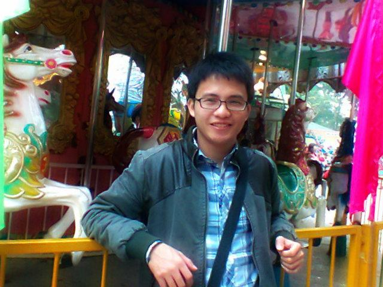

- Họ và tên: Nguyễn Văn Thái
- Ngày sinh: 17/11/1991
- Địa chỉ: Hà Nội- Việt Nam
- Tính cách: Vui vẻ, hòa đồng, ham học hỏi.
- Sở thích: Đá bóng, xem phim, nghe nhạc
- Ngoại ngữ: Tiếng Anh giao tiếp
| Thời gian | Trường |
| 2006-2009 | THPT Trần Hưng Đạo |
| 2009-2013 | Đại học khoa học tự nhiên |
| Thời gian | Công ty | Nhiệm vụ |
| 7/2012-5/2013 | Công ty cổ phần công nghệ Tinh Vân (Tinh Vân Telecom) Vị trí : PR-Marketing |
- Quản lý hệ thống quảng cáo của công ty - Xây dựng kế hoạch tổ chức sự kiện, giới thiệu sản phẩm của công ty - Lập kế hoạc PR cho các sản phẩm của công ty - Đàm phán, ký hợp đồng liên quan đến quảng cáo - Xây dựng đời sống vui, khỏe có ích cho nhân viên công ty - Quản lý website, fanpage về sản phẩm của công ty. |
| 3/2011-6/2012 | Công ty cổ phần dịch vụ truyền thông Vietnamnet I-com Vị trí : Biên tập viên/ trưởng nhóm giám sát dịch vụ |
- Xây dựng và quản lý dịch vụ đấu giá, y tế trên (mobil) - Viết kịch bản quảng cáo trên vov, vtv6 - Biên tập các bài viết về tin tức sự kiện hàng ngày cho mobil - Xây dựng và thiết kế website - Xây dựng và giám sát các cộng tác viên |
| 1/2009–6/2012 | Báo điện tử Dân Trí; Vtc.vn; Vietnamnet.vn; Vnmedia.vn; phapluatxahoi.vn… Vị trí : Cộng tác viên |
- Phát hiện đề tài, viết các bài phản ánh, các thông tin mới về mọi lĩnh vực trong đời sống kinh tế, xã hội. - Tham khảo các bài viết tại blog cá nhân có dẫn link bài đăng trên các báo: http://cvblog.net/ click mục Nhật Ký công việc |
Kỹ năng mềm
- Kỹ năng giao tiếp, tạo và mở rộng quan hệ
- Kỹ năng thuyết trình
- Kỹ năng quản lý thời gian
- Kỹ năng làm việc theo nhóm
- Kỹ năng lắng nghe tích cực và tư duy tích cực
Kỹ năng chuyên môn
- Khả năng xác nhận thông tin tốt
- Thành thạo HTML
- Thành thạo CSS
- Thành thạo Javascript
- Thành thạo PHP